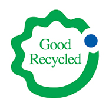
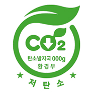

본문
제조∙유통업을 위한 환경성 표시·광고 가이드라인
”환경성 표시·광고“는 제품의 환경성에 대해 제품에 표시하거나 다양한 매체를 통해 광고하는 것을 말합니다. 여기에서 말하는 “제품의 환경성”이란, 재료와 제품을 제조·소비·폐기하는 전 과정에서 오염물질이나 온실가스 등을 배출하는 정도 및 자원과 에너지를 소비하는 정도 등 환경에 미치는 영향력의 정도를 말합니다.
최근에 환경적으로 우수한 제품에 소비자가 많은 관심을 가지면서, 부당한 이익을 목적으로 마치 환경성을 개선한 것처럼 사실과 다르게 표시·광고하는 경우가 많으며, 이러한 사실이 확인되는 경우에는 「환경기술 및 환경산업 지원법」(이하 환경기술산업법)에 따라 제재받을 수 있으며, 법에서 금지하고 있는 세부 유형은 다음과 같습니다.
법에서 금지하고 있는 부당한 표시·광고 행위의 세부유형
| 구분 | 내용 |
| 거짓·과장의 표시·광고 |
|
| 기만적인 표시·광고 |
|
| 부당하게 비교하는 표시·광고 |
|
| 비방적인 표시·광고 |
|
이러한 환경성 개선 관련하여 에너지·자원의 투입과 온실가스 및 오염물질의 발생을 최소화하는 제품을 녹색제품으로 인정하고 있으며(「탄소중립기본법」 제66조제4항), 여기에는 환경표지, 우수재활용 및 저탄소인증으로 분류되고(「녹색제품구매법 제2조의2」), 각각의 법률에 따라 근거하여 운영하고 있습니다.
| 구분 | 환경표지제품 | 우수재활용(GR)제품 | 저탄소인증제품 |
| 근거법 | [환경기술 및 환경산업 지원법] | [자원의 절약과 재활용 촉진에 관한 법률] | [녹색제품 구매촉진에 관한 법률] |
| 대상제품 인증현황 |
사무용기기, 건설용자제, 생활용품 등 165개 제품균 | 폐지, 폐목재, 폐플라스틱 등 18개 분야 | 생활용품, 건설용자재 등 52개 제품군 |
| 인증현황 | 4.592개 업체, 19,881(기본)제품 ("23.7.31. 기준) |
281개 업체, 342개 품목 ("23.7.31 기준) |
176개 업체, 605개 제품 ("23.7.31 기준) |
| 인증기관 |
한국환경산업기술원 (www.keiti.re.kr) |
자원순환산업인증원 (www.grmark.or.kr) |
한국환경산업기술원 (www.keiti.re.kr) |
| 홈페이지 | http://el.keiti.re.kr | http://www.buygr.or.kr | http://www.epd.or.kr |
| 도안 |  |  |
또한, 환경성 표시∙광고는 자기 선언적인 성격을 가지고 있지만, 8대 기본원칙이 존재합니다. 이 중 진실성, 실증 가능성은 모든 표시·광고에 적용됩니다. 아래의 기본원칙별 기업 스스로가 부당한 환경성 표시·광고 위반 여부를 스스로 진단해 볼 수 있는 “셀프 체크리스트”를 확인하시고, “아니오”로 확인된 사항에 대하여 “제품 환경성 표시∙광고 길라잡이”를 통해 보완하셔야 합니다
체크리스트로 확인이 어려운 경우 환경성 표시·광고의 최소 요건에 따라 광고 가능 여부를 판단할 수 있습니다
환경성 표시·광고 관리기관인 한국환경산업기술원은 “제품 환경성 표시∙광고 사전 검토” 제도를 실시하여 기업의 사업 추진 및 소비자와 기업 피해를 예방하고 있습니다. 자세한 안내는 하단의 링크를 확인하시기 바랍니다.
제품 환경성 표시·광고 사전검토환경성 표시·광고에 대한 더 자세한 내용은 한국환경산업기술원에서 발간한 “제품 환경성 표시∙광고 길라잡이”를 확인하시기 바랍니다.
제품 환경성 표시·광고 길라잡이